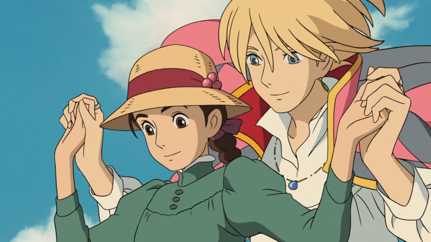

Mis animes favoritos
- Sailor Moon
- Ranma 1/2
- Kamisama Hashimemashita
- Junji ito collection
- One Piece
Artistas favoritos
- Enjambre
- Sabino
- Daaz
- Cardenales de Nuevo León
- The Strokes
Películas favoritas
- Románticas
- La nueva Cenicienta
- A todos los chicos que me enamoré
- A un metro de ti
- Clueless
- Como si tuviera 30
- Animación
- Sherk 2
- Megamente 
- Ghibli
- La tumba de las luciernagas
- El viaje de Chihiro
- El castillo vagabundo
- Susurros en el corazón
- Kiki entregas a domicilio
- Your name
- El cadaver de la novia
- Terror
- Pesadilla en la Calle Elm
- Terrifier
- The poughkeepsie tapes
- El conjuro
- Actividad paranormal
Frutas favoritas
- Mandarina
- La mandarina (Citrus reticulata) es muy parecida a la naranja, pero más pequeña y de forma esférica, contiene una pulpa dulce y jugosa que se divide en 10 ó 12 gajos; es considerada una de las frutas más preciadas por sus múltiples propiedades culinarias, cosméticas y medicinales.
- Uva
- La uva es el fruto de la vid y se caracteriza por ser esférica, carnosa y se agrupa en racimos. Es ampliamente utilizada a nivel mundial, especialmente para la producción de vino a través de la fermentación.
- Naranja
- La naranja, producto del árbol del naranjo dulce, es una de las frutas más populares. México es uno de los primeros productores a nivel mundial. Su uso más frecuente es en jugo, nutritivo y común especialmente en el desayuno. También se le encuentra en gran cantidad de loncheras escolares, como fruta fresca y golosina para el recreo. En la industria de los alimentos se aprovecha para elaborar mermeladas; aceites y esencias de naranja (que se obtienen de la cáscara del fruto); aromatizantes y saborizantes. Además es un ingrediente en diversos platillos de la cocina mexicana